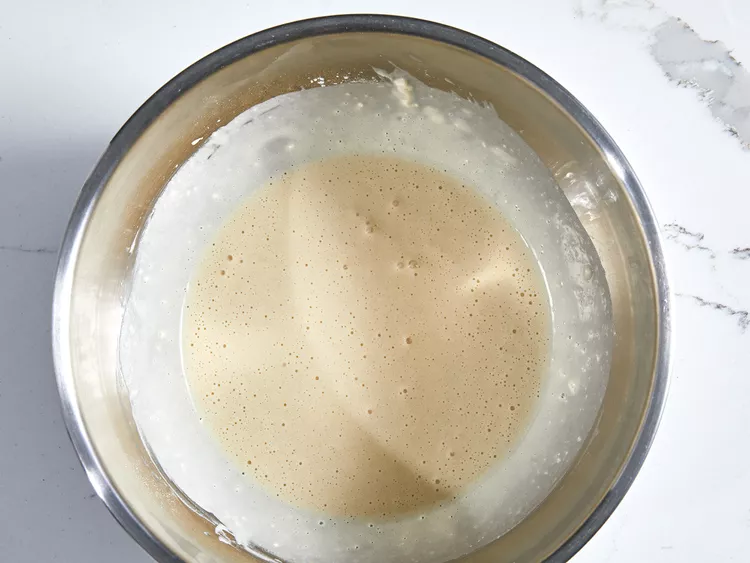
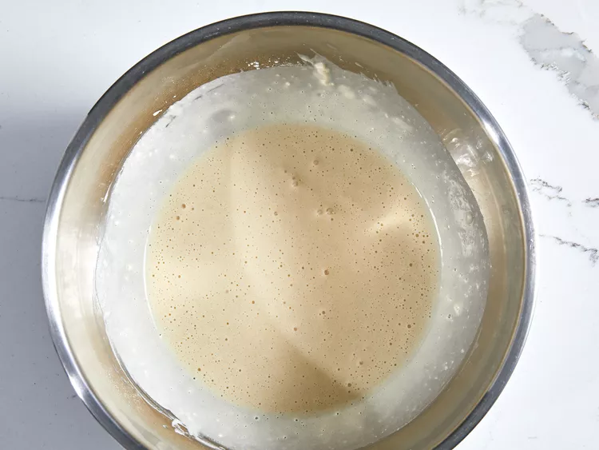
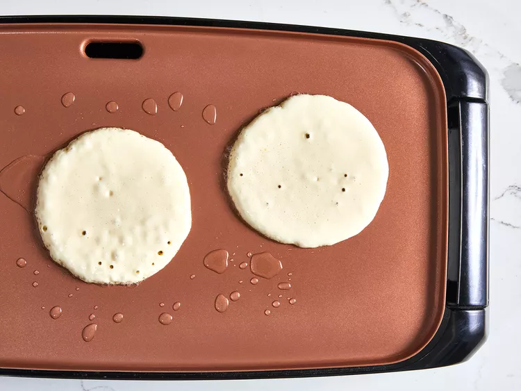
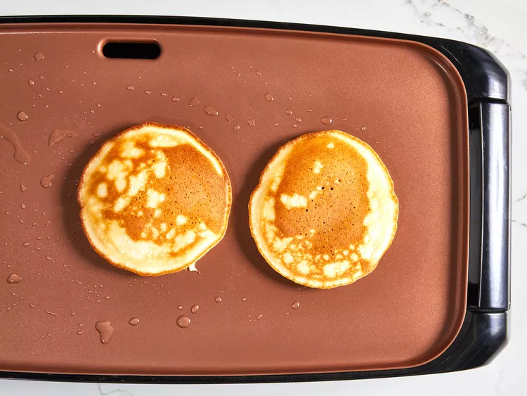
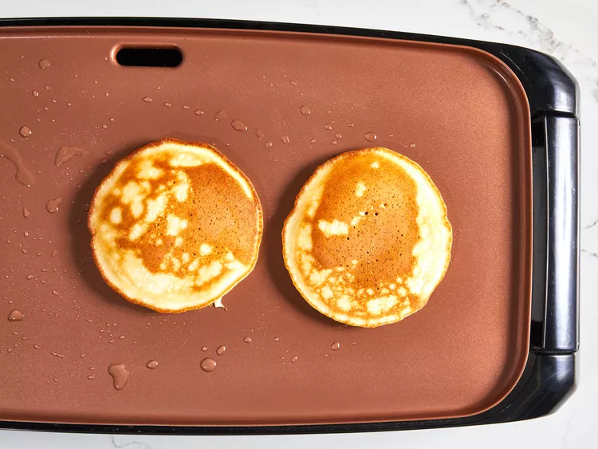

This quick and easy pancake recipe puts the store-bought stuff to shame.

You'll find a detailed ingredient list and step-by-step instructions in the recipe below, but let's go over the basics:
Here’s a brief overview of what you can expect when you make quick and easy pancakes at home:
Of course, maple syrup is the perfect topping for these easy pancakes. They also pair well with homemade whipped cream, blueberry compote, fresh fruit, and brunch classics such as scrambled eggs and bacon. For more delicious inspiration, explore our entire collection of Breakfast and Brunch Recipes.
Store leftover easy pancakes in an airtight container in the fridge for about a week or freeze them for up to two months.
Combine flour, sugar, baking powder, and salt in a large bowl. Make a well in the center, and pour in milk, oil, and egg. Mix until smooth.
 

Heat a lightly oiled griddle or frying pan over medium-high heat. Pour or scoop batter onto the griddle, using approximately 1/4 cup for each pancake; cook until bubbles form and the edges are dry, 1 to 2 minutes. Flip and cook until browned on the other side. Repeat with remaining batter.
 

Serve hot and enjoy!